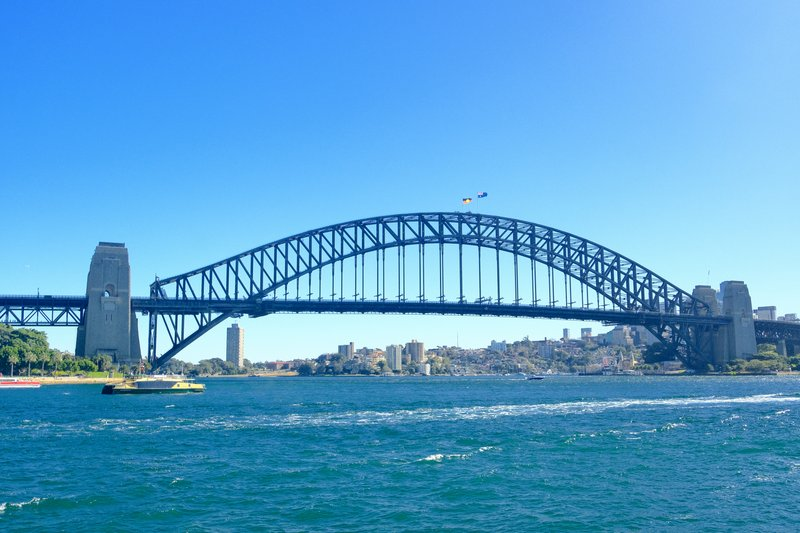
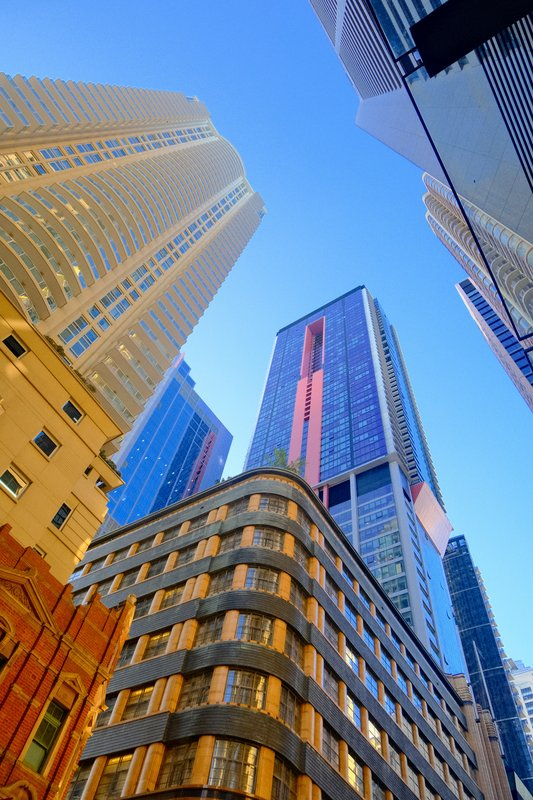
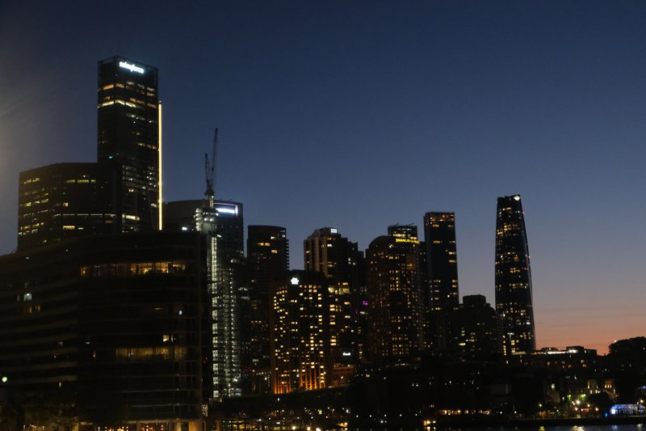
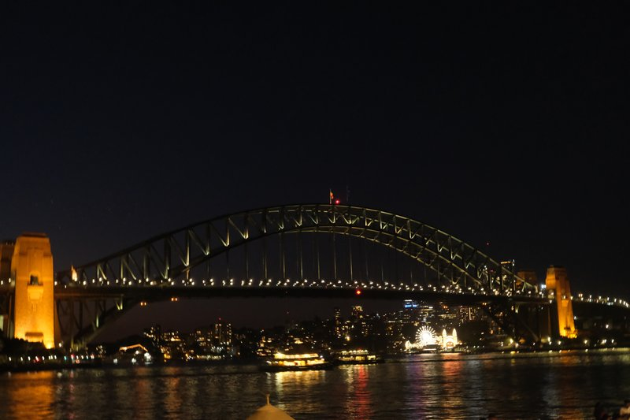

Landscape · Album 06 / 14
Walking around the city in 2024. The Opera House and the bridge at midday, then the same area again once it got dark.




 Next albumNinh BìnhNinh Bình, Vietnam · July 2026 · 6 photos
Next albumNinh BìnhNinh Bình, Vietnam · July 2026 · 6 photos
Want photos like these? DM me on Instagram or call 0490 324 875.